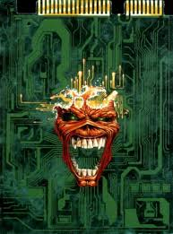

SPYWARE : è un tipo di software che raccoglie informazioni sulla navigazione web dell'utente e le trasmette ad un'organizzazione che le utilizzerà per inviare pubblicità mirate. Hanno una diffusione simile ai trojan, necessitano quindi dell'installazione dell'utente, attraverso programmi gratuiti sul web, che trarrano guadagno dal download grazie a questo malware. I danni degli spyware non sono gravi per il pc, poichè non viene danneggiato il software o l'hardware, ma viene invasa la privacy dell'utente, infastidisce con la spam e, se l'invasione è massiccia, può rallentare il pc a causa delle troppe pubblicità.
